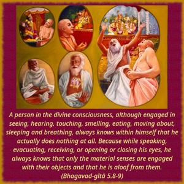
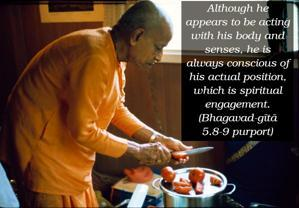

A person in the divine consciousness, although engaged in seeing, hearing, touching, smelling, eating, moving about, sleeping and breathing, always knows within himself that he actually does nothing at all. Because while speaking, evacuating, receiving, or opening or closing his eyes, he always knows that only the material senses are engaged with their objects and that he is aloof from them.


A person in Kṛṣṇa consciousness is pure in his existence, and consequently he has nothing to do with any work which depends upon five immediate and remote causes: the doer, the work, the situation, the endeavor and fortune. This is because he is engaged in the loving transcendental service of Kṛṣṇa. Although he appears to be acting with his body and senses, he is always conscious of his actual position, which is spiritual engagement. In material consciousness, the senses are engaged in sense gratification, but in Kṛṣṇa consciousness the senses are engaged in the satisfaction of Kṛṣṇa’s senses. Therefore, the Kṛṣṇa conscious person is always free, even though he appears to be engaged in affairs of the senses. Activities such as seeing and hearing are actions of the senses meant for receiving knowledge, whereas moving, speaking, evacuating, etc., are actions of the senses meant for work. A Kṛṣṇa conscious person is never affected by the actions of the senses. He cannot perform any act except in the service of the Lord because he knows that he is the eternal servitor of the Lord.